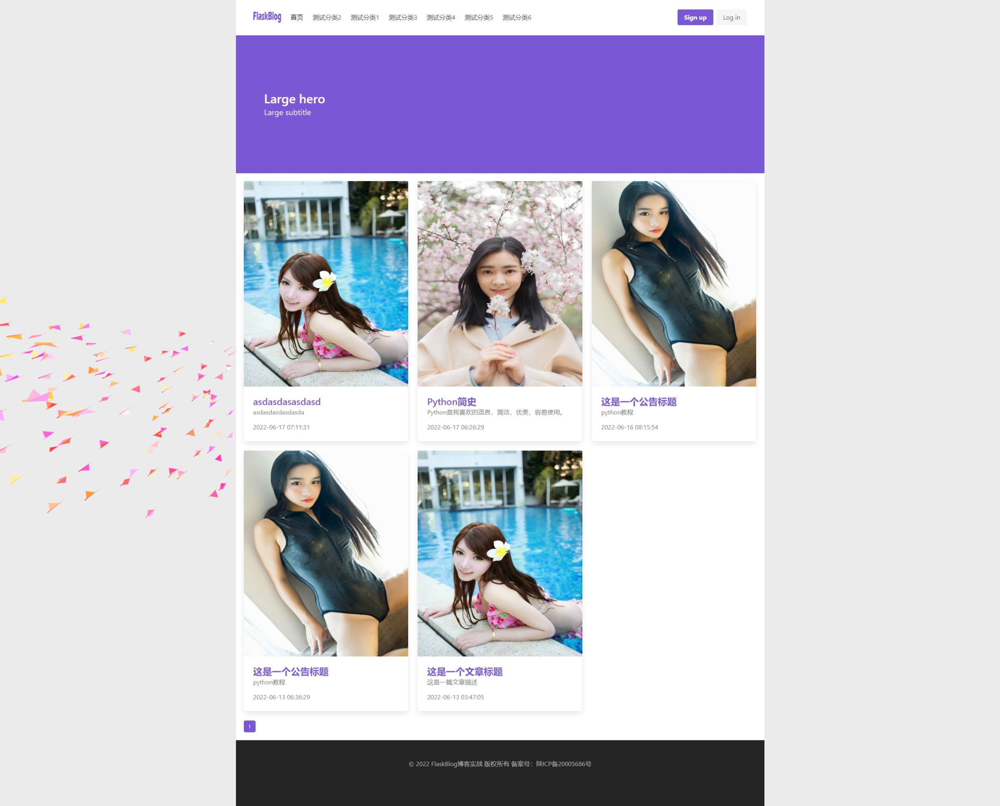

Flask上下文处理器
我们博客的设计是全站顶部菜单为通用菜单，调用的数据为文章的分类，那么如何将文章分类数据传递到每个页面的上下文呢？
为了将新变量自动注入模板的上下文中，Flask 中存在上下文处理器context_processor。上下文处理器在呈现模板之前运行，并且能够将新值注入模板上下文。上下文处理器是返回字典的函数。然后，对于应用程序中的所有模板，此字典的键和值将与模板上下文合并：
用法为如下所示，这只是一个例子：
@app.context_processor
def inject_user():
return dict(user=g.user)
上面的上下文处理器使一个名为 user 的变量在模板中可用，其值为 g.user。这个例子不是很有趣，因为g无论如何都可以在模板中使用，但它给出了它是如何工作的。
变量不限于值;上下文处理器还可以使函数可用于模板（因为Python允许传递函数）：
@app.context_processor
def utility_processor():
def format_price(amount, currency="€"):
return f"{amount:.2f}{currency}"
return dict(format_price=format_price)
上面的上下文处理器使format_price函数可用于所有模板：
{{ format_price(0.33) }}
您还可以将format_price构建为模板筛选器，但这演示了如何在上下文处理器中传递函数。
实现全站导航功能
知道了上下文处理器的用法，实现这个功能就非常简单了！
在RealProject目录的__init__.py中插入如下一个上下文回调函数
def inject_category():
# 上下文处理器回调函数
"""
context_processor上下文处理器在呈现模板之前运行，并且能够将新值注入模板上下文。上下文处理器是返回字典的函数。
然后，对于应用程序中的所有模板，此字典的键和值将与模板上下文合并：
"""
from app.blog.models import Category
categorys = Category.query.limit(6).all()
return dict(categorys=categorys)
这个函数通过limit()方法查询出前6个数据，并通过一个字典返回，之后我们还需要将该回调函数注册到app的工厂函数当中！
def create_app(test_config=None):
app = Flask(__name__, instance_relative_config=True)
# 省略部分代码
# 全局上下文
app.context_processor(inject_category)
return app
在app/blog/templates/base.html中循环查出我们返回的数据即可
<!-- 导航 -->
{% block navbar %}
<template>
<b-navbar spaced shadow>
<template #brand>
<b-navbar-item>
<img src="{{ url_for('blog.static', filename='img/logo.png') }}" alt="FlaskBlog">
</b-navbar-item>
</template>
<template #start>
<b-navbar-item href="/"
{% if request.path == '/' %}active {% endif %}>
首页
</b-navbar-item>
<!-- 查询菜单数据 -->
{% for cate in categorys %}
<b-navbar-item href="#">
{{ cate.name }}
</b-navbar-item>
{% endfor %}
</template>
<!-- ...省略部分代码 -->
</b-navbar>
</template>
{% endblock navbar %}
<!-- 导航 end -->
实现首页视图数据
在app/blog/views.py文件中的index首页视图函数中实现
def index():
"""首页视图
"""
page = request.args.get('page', 1, type=int)
pagination = Post.query.order_by(-Post.add_date).paginate(page, per_page=9, error_out=False)
post_list = pagination.items
import random
imgs = ['图一url', '图二url', '图三url']
for post in post_list:
post.img = random.sample(imgs, 1)[0]
# post.img = random.choice(imgs)
return render_template('index.html', posts=post_list, pagination=pagination)
这个视图函数中的查询逻辑在实现文章管理的时候已经实现过，这里唯一不同的区别就是我给这个返回数据新增了一个img的属性，因为在数据库我们没有设计文章形象图字段，我们用这种方式弥补，在imgs的列表中预设一些图片的url地址，之后随机抽取一个赋值给img属性，这样在模板中直接调用这个img属性就会获取到图片的url!
在app/blog/templates/base.html中替换相关循环数据
<div class="columns is-multiline">
{% for post in posts %}
<div class="column is-4-fullhd is-6-desk">
<div class="card">
<div class="card-image">
<figure class="image is-4by5">
<img src="{{ post.img }}"
alt="Placeholder image">
</figure>
</div>
<div class="card-content">
<div class="content">
<p class="title is-4"><a href="">{{ post.title }}</a> </p>
<p class="has-text-grey subtitle is-size-6">
{{ post.desc }}
</p>
<time class="has-text-grey" datetime="{{ post.add_date }}">{{ post.add_date }}</time>
</div>
</div>
</div>
</div>
{% endfor %}
</div>
最终效果： 